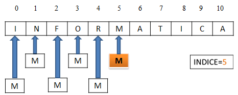
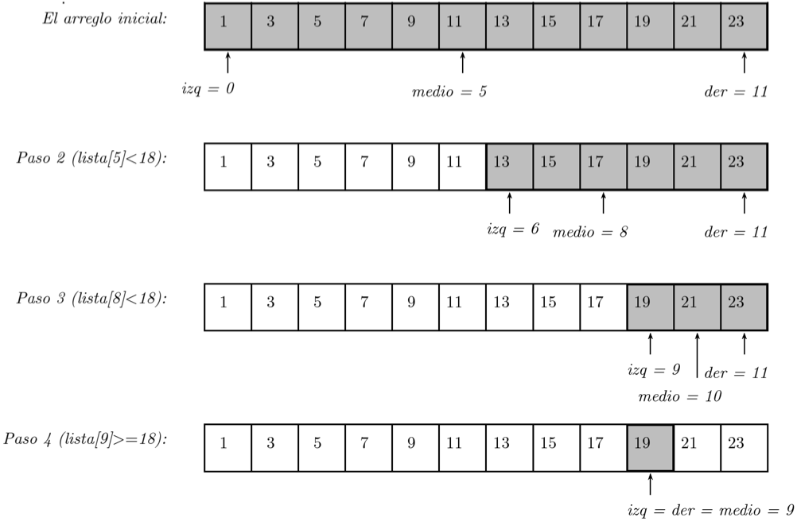
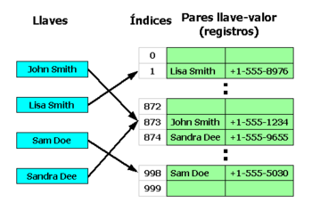
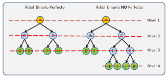
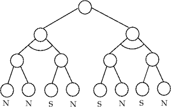

Métodos de Búsqueda
Los métodos de búsqueda se refieren a técnicas utilizadas para encontrar un elemento específico dentro de un conjunto de datos. Estos métodos son esenciales en la programación y la informática para realizar búsquedas eficientes y rápidas en conjuntos de información de diversos tamaños.
También conocida como búsqueda secuencial, este método implica examinar cada elemento de la estructura de datos en secuencia hasta encontrar el elemento deseado o llegar al final. Es eficaz para listas no ordenadas, pero puede ser ineficiente en listas grandes.
Aplicable solo a listas ordenadas, la búsqueda binaria divide repetidamente la lista a la mitad y compara el elemento deseado con el elemento central. Este enfoque es más eficiente que la búsqueda lineal y tiene una complejidad logarítmica (O(log n) O (logn)).
Las tablas hash utilizan una función de dispersión para asignar claves a ubicaciones en la tabla. La búsqueda implica calcular la función de dispersión y buscar en la ubicación correspondiente. En el caso promedio, la búsqueda en una tabla hash tiene una complejidad constante (O(1)O(1)), pero puede haber colisiones.
Las tablas hash utilizan una función de dispersión para asignar claves a ubicaciones en la tabla. La búsqueda implica calcular la función de dispersión y buscar en la ubicación correspondiente. En el caso promedio, la búsqueda en una tabla hash tiene una complejidad constante (O(1)O(1)), pero puede haber colisiones.
Para buscar en estructuras de grafos, se pueden utilizar algoritmos como la búsqueda en profundidad (DFS) o la búsqueda en amplitud (BFS), dependiendo de los requisitos específicos.
La búsqueda es una operación que tiene por objeto la localización de un elemento dentro de la estructura de datos (arreglo). A menudo un programador estará trabajando con grandes cantidades de datos almacenados en arreglos y pudiera resultar necesario determinar si un arreglo contiene un valor que coincide con algún valor clave o buscado.
Más información